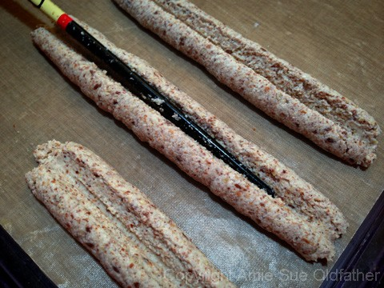
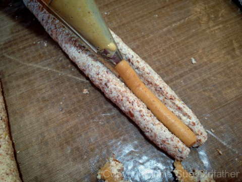
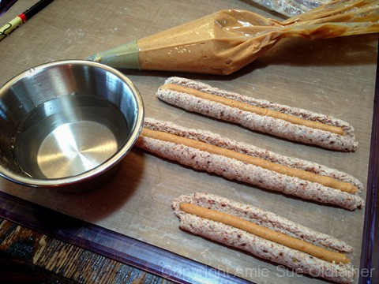
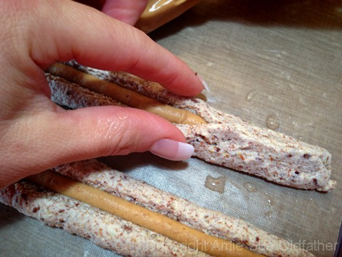
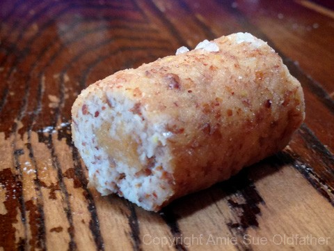
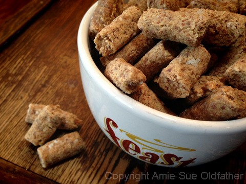

Peanut Butter Filled Pretzels

~ raw, vegan, gluten-free ~
As of late, I have been on a roll creating raw pretzels. It all started with a request from Nikki, a Nouveau Raw reader. She had been craving pretzels and asked me to come up with a raw version.
So, I created a raw pretzel; then I drenched them in chocolate. A few days later I thought to myself, “Why not make sourdough flavored ones?” So back to my lab kitchen I went. After success with those, my mind said, “HONEY AND MUSTARD Pretzel!
You can make honey and mustard flavored pretzel!” …. “I can?”….”You can?”…. “Really?”… “Yes REALLY, get in that kitchen of yours and get to work missy!”….. “OK!”….. I knew that growing up as an only child would prove to be useful in my adult years. I have mastered the art of talking to myself. lol
So there I was, on the kitchen island sat a bowl of raw pretzels, pretzels with chocolate around them, sourdough pretzels, and now honey mustard flavored pretzels. I was quite proud and downright excited about what I had achieved!
And in my own little world, I was accepting some grand award for my creations that now sat before me… I think I was wearing some gorgeous red dress, and my hair was all done up in some “up-do” as I made my way to the stage…. then my husband walked by and broke my daydream and commented,
“This is all great but, can you make a peanut butter-filled pretzel????” And walked off. “Well, duh! Of course, I can!” Pft…. silly man. I completed my awards acceptance speech in my head (haha) and went to work on figuring out just how I was going to inject each pretzel with peanut butter. Oy-Vey!
After a little trial and error and a counter full of dirty dishes… I created the First Raw Peanut Butter Filled Pretzel, well at least from what I could tell. Regardless if it is the first, tenth or twentieth…. anytime you get in the kitchen and unleash your love and passion for creating healthier foods, it is always a blessed event! Enjoy!
yields 5 cups little pretzels
Preparation:
Create the batter:
- In a food processor, fitted with an “S” blade, pulse together the almond pulp, ground flaxseed, and salt.
- Add almond butter, milk, aminos, sweetener, and vanilla. Process until everything is well combined.
Piping the pretzels:
- You will need 2 disposable piping bags and a 1/2″ piping tip or larger for the pretzel batter and a smaller tip for the peanut butter.
- For each bag, place the piping tip in the bag and cut the tip-off, so the tip pokes through but is nice and snug in the bag. If the hole is too big, the tip will shoot right out once you apply pressure to the bag.
- Once you have the tip in place, slide the bag into a tall glass, and fold the edges over the glass rim. This will create a stand, and it will make it easy to fill it with the batter. I posted the photos below.
- Fill the piping bags, about 3/4 quarter of the way full.
- Work all of the air bubbles out of the bag so that it doesn’t “burp” while creating a line of dough.
- You will need to re-load the bag 1-2 times throughout the process.
- Place a teflex sheet on the mesh sheet that comes with the dehydrator.
- Hold the bag at a 22 1/2 degree angle and with steady, consistent pressure, squeeze the batter out and slowly slide the tip down the teflex sheet.
- Don’t go too fast and cause the line to break and don’t go too slow which will cause bulges. You will quickly get the hang of it.
- Create solid lines from one side of the tray to the other. I have an Excalibur dehydrator that has large square trays.
- Using a chopstick, create a channel down the center of the pretzel dough strip.
- Follow with the peanut butter by piping it out down the center of the channel that you created.
- Once done, with damp fingers, pinch the pretzel batter edges together.
- Sprinkle coarse sea salt on top and lightly press it into the dough. Because we are not using yeast these pretzels won’t rise causing the dough to grab onto the salt, so we have to help it a little. :)
- Dehydrate at 145 degrees (F) for 1 hour to set the “outer crust.”
- Cut into 1″ pieces and then place them on the mesh sheet.
- Continue drying at 115 degrees (F) for 6-8 hours or until dry.
- They do firm up a tad more once they cool.
- Store in an airtight container for up to a week. If they soften before eaten, pop them back into the dehydrator to firm them up.
The Institute of Culinary Ingredients™
- To learn more about maple syrup by clicking (here).
- What is Himalayan pink salt and does it really matter? Click (here) to read more about it.
- Learn how to make your own raw almond butter by clicking (here).
- Learn how to grind your own flaxseeds for ultimate freshness and nutrition. Click (here).
- Aminos is a gluten-free, soy-free… soy sauce substitute. There are many other comparable products that you can use. Click (here) to learn more about them.
Culinary Explanations:
- Why do I start the dehydrator at 145 degrees (F)? Click (here) to learn the reason behind this.
- When working with fresh ingredients, it is important to taste test as you build a recipe. Learn why (here).
- Don’t own a dehydrator? Learn how to use your oven (here). I do however truly believe that it is a worthwhile investment. Click (here) to learn what I use.
Using the piping bag and the large tip, pipe out nice
and thick ropes of pretzel dough. I made mine about 6″ long.
Then use a chopstick to create a channel down the center.

Now, pipe the peanut butter into the channel.
Make sure you are using a smaller tip.

Now to close the pretzel, have a small container of water
near you to keep your fingertips damp.

Carefully pinch the pretzel batter together around the peanut butter.
Then gently roll the pretzel back and forth to round it out a bit.
That is why I only made them about 6″ long if they are any
longer, it would be more difficult to roll and not break them.



© AmieSue.com